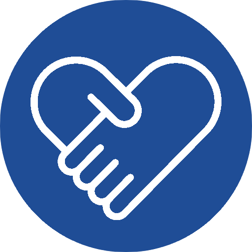
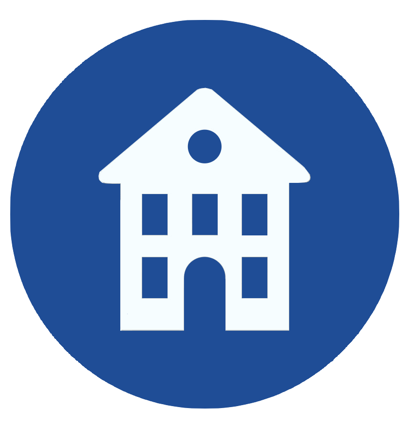
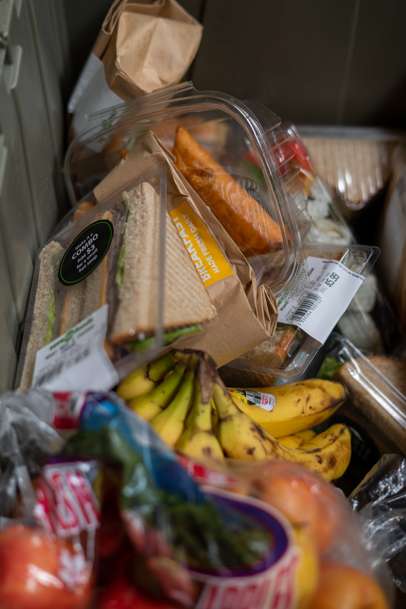
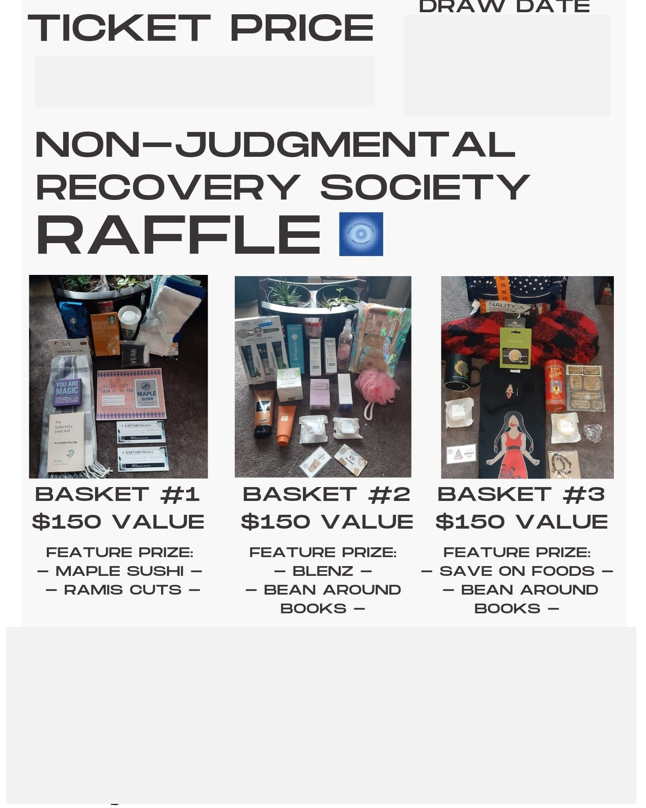
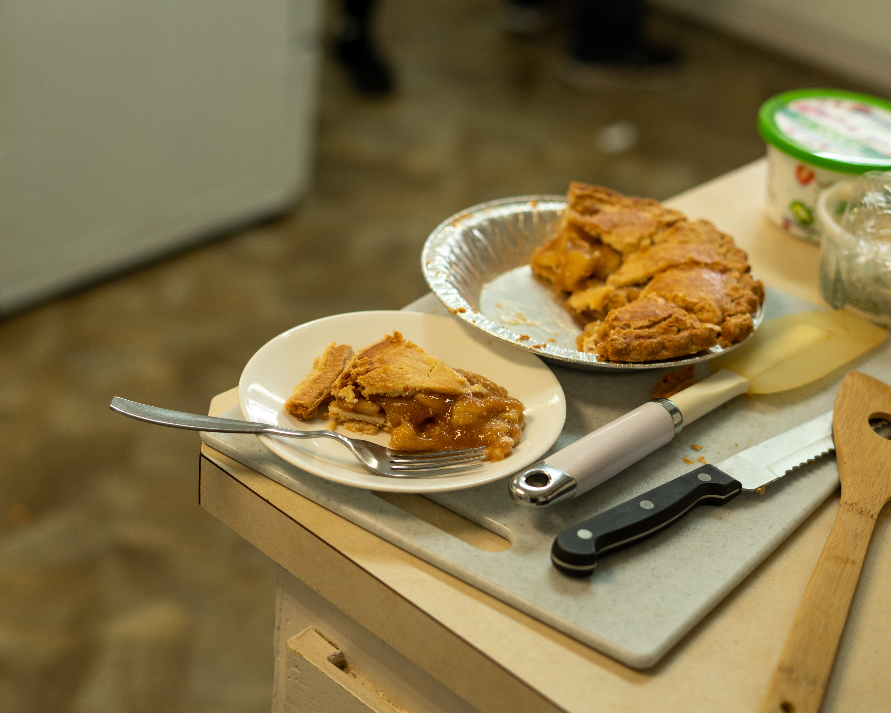
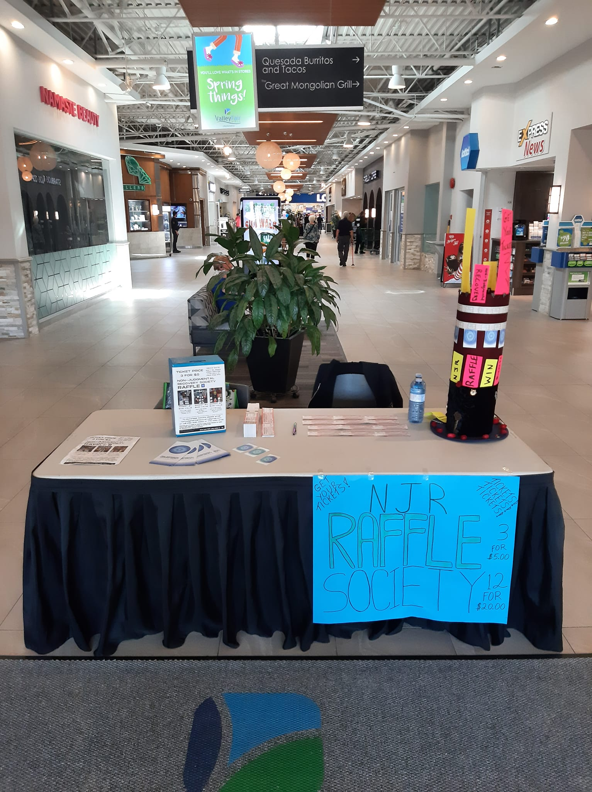
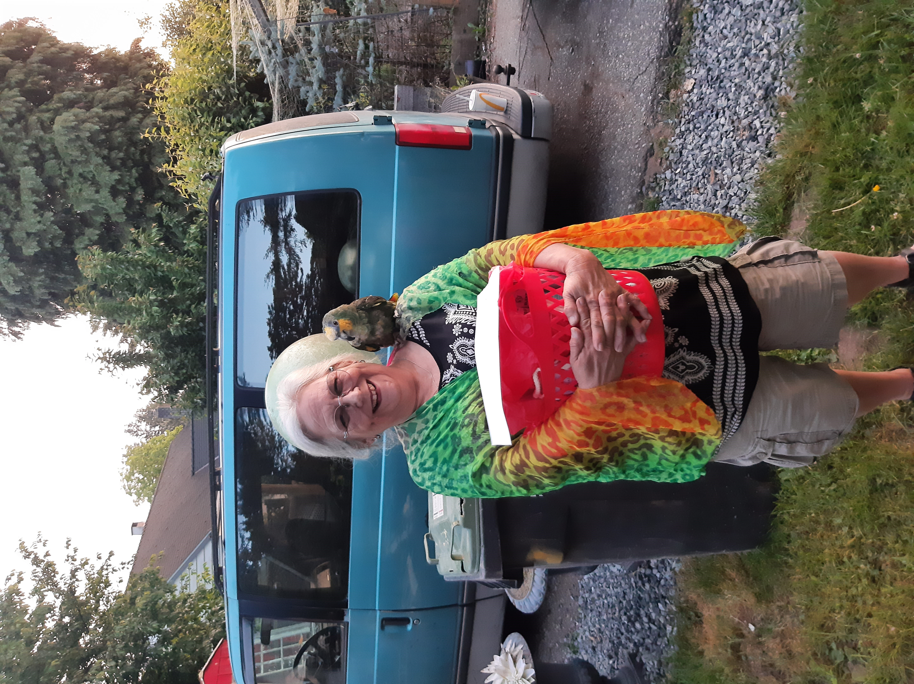
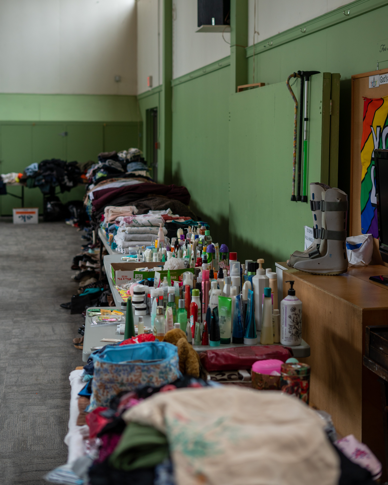
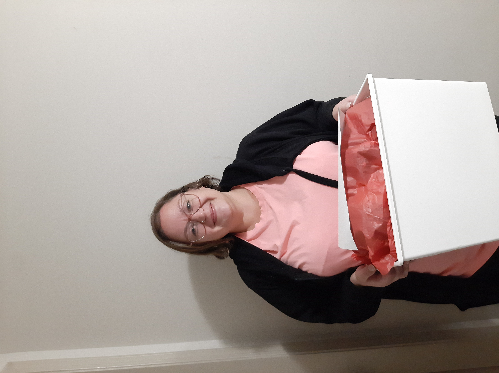
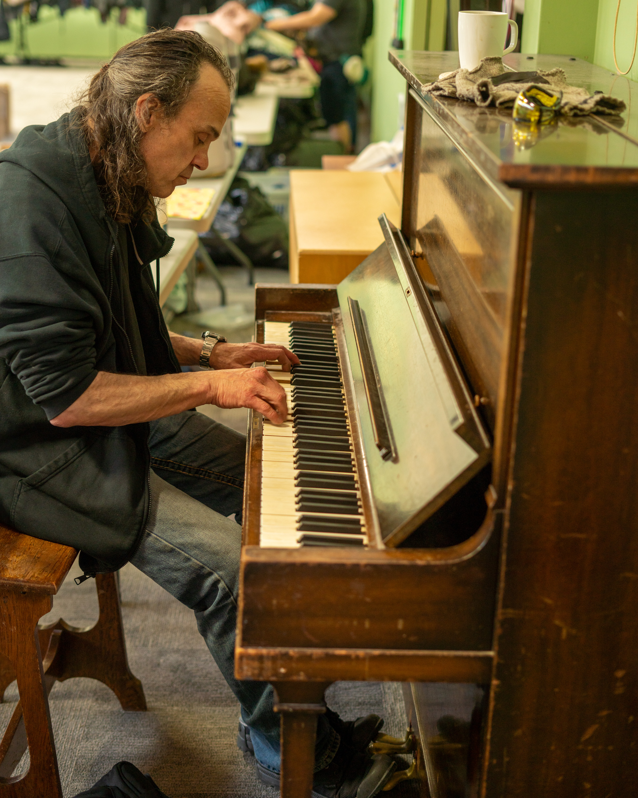

OUTREACH
Compassionate, community-based programs serving Maple Ridge and the Lower Mainland:
- the Rapid Recovery Response program provides on call referall services to individuals in need of housing, support while transitioning into treatment or between regulated facilities; including transport, referall and application assistance;
- the care package program includes the making and supply of care packs for the community, wellness checks, sorting and disbursement of community donations, and on-call support; and
- NJR meetings are regular hybrid recovery meetings meant to foster non-judgmental support networks for recovering addicts - see our facebook page for more information.
EDUCATION
providing education to practitioners, support workers, volunteers, and the general community:
- narcan training
- training for volunteers
- presentations related to field work, research partnerships.
EMPLOYMENT
Assistance, Opportunity, Training to help community members succeed, wherever they're at in their journey:
- Referalls and Resume/application assistance
- Work opportunities*
- Training and Mentorship
- Volunteer opportunities

HOUSING
Support, Referalls services to assist individuals in need of housing:
- Referalls
- 2nd Stage Housing*
- Service Connections and Assistance
*program in development or planned for future development
TESTIMONIALS
- "i have gone to many different meetings and recovery groups and always felt out of place. Since coming to find out about Non-Judgmental Recovery, I've found that I am surrounded by people doing it there way and I finally fit in. I volunteer myself to help with outreach or whatever else i possibly can to make sure that i always have a meeting where i am accepted for who i am; and that's a person who is clean from my drug of choice with an amazing support network of like minded people." - ML
- "I’ve been to almost every fellowship that is available to those in recovery and NJR was the one that I immediately clicked with upon my first time attending one of their meetings. The atmosphere and energy that radiated from the group made me feel welcomed and like I belonged right off the bat. The support and love shown in the room was unlike anything I have ever experienced. The outreach opportunities I have gotten to participate in have all been super awesome experiences and it’s been a treat to know and be a part of the NJR family." - MJ
A Universal Approach to Recovery
NJR founders Dena Jones and Jesse Sokol
The Non-Judgmental Recovery Society (NJR) believes that there is value in all Recovery Programs. We have seen evidence among our peers that successful, long-term Recovery is more closely tied to the Connections and Support Systems one builds than to the specific Recovery Program one chooses to follow. We believe that there are Universal Principles that are essential in Recovery and that these Principles can be presented and discussed for their merits without being tied to any specific Program.
reach out to find out more about NJR meetings, meetups, and outreach programs in your area and start building your recovery network - together, we can.
NJR Impact
community service provided so far:
-
3330+
Care Packs Deliveredsupported by project partners and volunteers
-
227+
Rapid Recovery Response Activations
-
2560+
Volunteer Hoursoutreach and one-on-one support


Program Partners
program partners supporting NJR's outreach programs
reach out to get connected
- + Friends in Need Food Bank
- + Salvation Army Ridge Meadows
- + Soap for Hope Canada
- + Rotary Club of Meadow-Ridge
- + CEED Centre Society
- + Maple Ridge Community Foundation

COMMUNITY EVENTS HIGHLIGHTS
2023 FOOD AND CLOTHING POP-UP
In April of 2023 we partnered with the Golden Ears United Church to provide free meals and clothing for the community. Many thanks to everyone who helped us deliver an amazing service filled with live music, laughter, and tons of donations - we look forward to next year!
2023 RAFFLE
Our yearly raffle supports our outreach programs - with the help of our awesome community we raised over $2,000 to secure food, wound care, and other items that help us connect with and support individuals on thier recovery journeys. Thanks to all who helped make this year's raffle a success!







